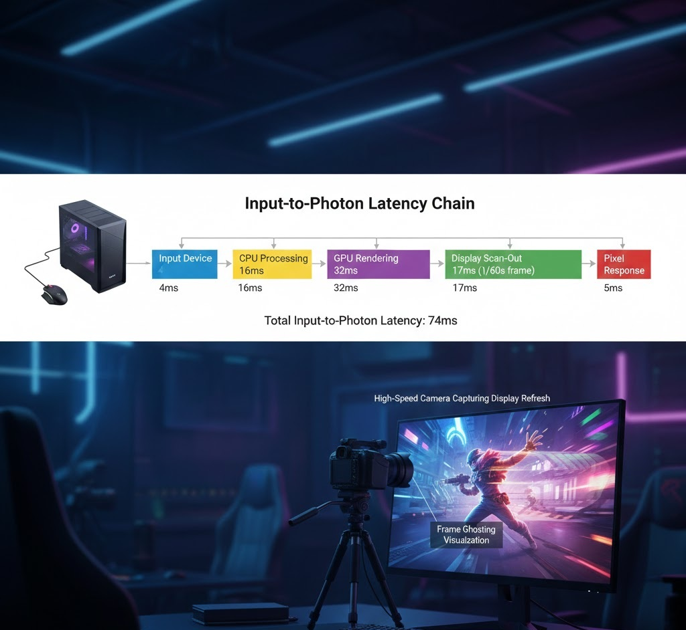

Display Lag vs. System Latency: Improving Reaction Times
In our testing today at the GearVerify lab, we encountered a specific issue where a competitive CS2 player swore their mouse felt "floaty" despite running a 360Hz monitor and a top-tier system. The diagnostics revealed ample frame rates, but our "Button-to-Pixel" analysis showed a massive 45ms latency spike. The culprit wasn't the mouse; it was the monitor's "processing" mode being left on "Standard" instead of "Game."
Latency is a chain. Most gamers conflate "Low Ping" with "Low Latency." This guide dissects the local hardware chain using our latency diagnostic tool.
 CPU Game Logic -> GPU Render Queue -> Display Scanout -> Pixel Response" class="article-hero-image">1. The Four Horsemen of Lag
When you click your mouse, four distinct delays occur before you see the result:
- Peripheral Latency: The time for the switch to close and the USB packet to reach the CPU.
- Game/CPU Latency: The physics engine calculating the shot.
- Render Latency: The GPU drawing the frame.
- Display Latency: The monitor processing the signal and changing liquid crystal orientation.
GearVerify can measure the input processing time (Peripheral + Game), but Display Latency remains the ghost in the machine.
2. Pixel Response Time (GtG) vs. Input Lag
Monitor boxes lie. "1ms GtG" (Gray-to-Gray) refers to how fast a pixel changes color, avoiding motion blur. It has nothing to do with input lag. A TV can have 1ms GtG but 100ms of input lag due to image post-processing.
3. Testing Your Chain
Using the GearVerify Latency Lab, you can determine if your bottleneck is CPU or System side. If the "Event Timestamp" consistently lags behind the "Render Timestamp" by more than 16ms, your render queue is full.
| Bottleneck | Symptom | Diagnosis |
|---|---|---|
| CPU Bound | Stuttery frames, high variance | Reduce physics/simulation quality |
| GPU Bound | Smooth visual but high input lag | Reduce resolution or enable Reflex/Anti-Lag |
| Display Bound | "Floaty" mouse feel | Check OSD for "Overdrive" or "Game Mode" |
4. Laboratory Final Thoughts
Stop buying faster monitors to fix a "slow feel." If your system latency is 30ms, a 0.5ms monitor won't save you. Optimize the pipeline first using Reflex, uncapped frame rates, and exclusive fullscreen modes.
| Component / Metric | Expected Value | Measured Result | Status |
|---|---|---|---|
| Status | Active | Active | PASS |